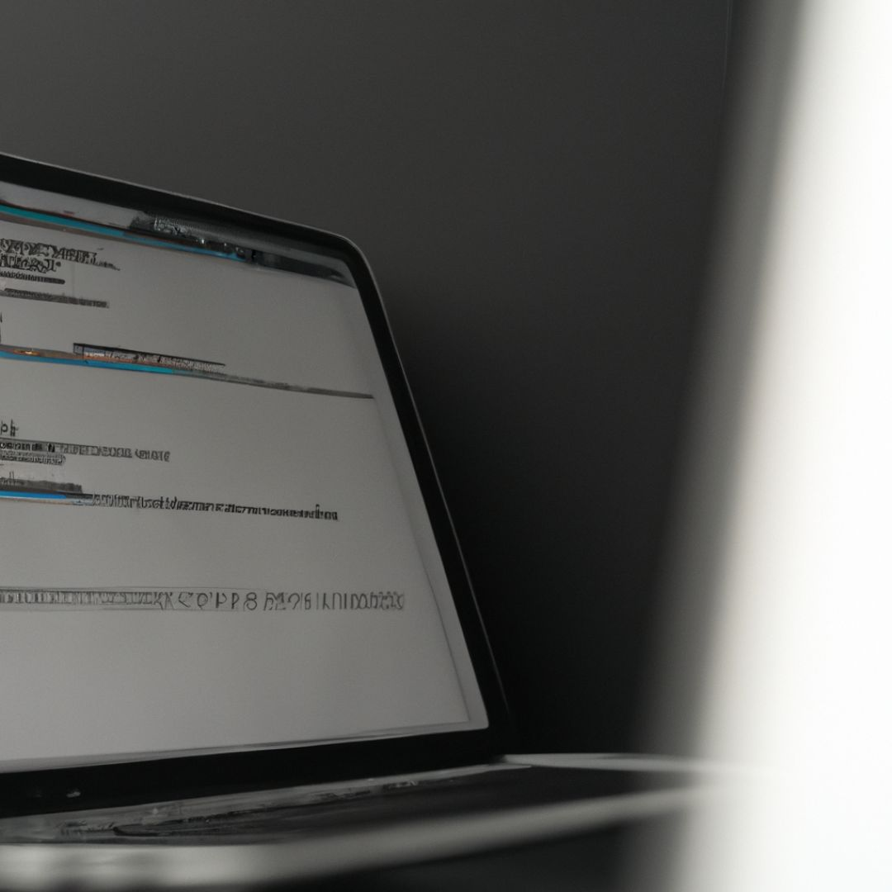
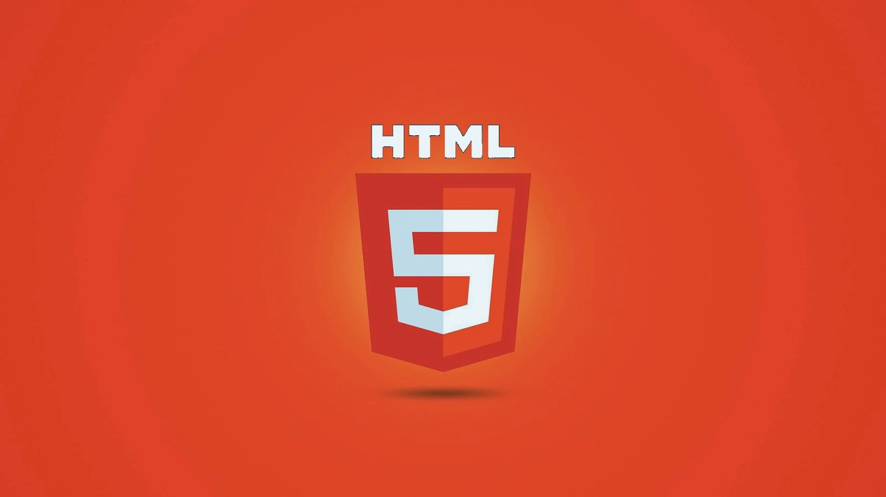
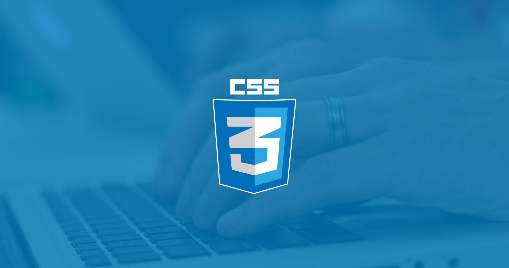

Para voltar à página inicial, clique aqui!
Programação Web I

Na disciplina de Programação Web I, administrada pelo professor Diogo Vinícius, vamos ser abordar e conhecer um pouco sobre HTML e CSS.
A seguir, vamos conhecer um pouco sobre essas linguagens, tão utilizada pelos programadores front-end.

- HTML:
- Não é uma linguagem de programação. É uma linguagem de marcação, usada para definir a estrutura do seu conteúdo.
HTML consiste de uma série de elementos, que você usa para delimitar ou agrupar diferentes partes do conteúdo para que ele apareça ou atue de determinada maneira.

- CSS:
- CSS é a linguagem que usamos para estilizar um documentos HTML.
E descreve também, como os elementos HTML devem ser exibidos.
CSS economiza muito trabalho!
As definições de estilo normalmente são salvas em arquivos .css externos.
Com um arquivo de folha de estilo externo, você pode alterar a aparência de um site inteiro alterando apenas um arquivo!